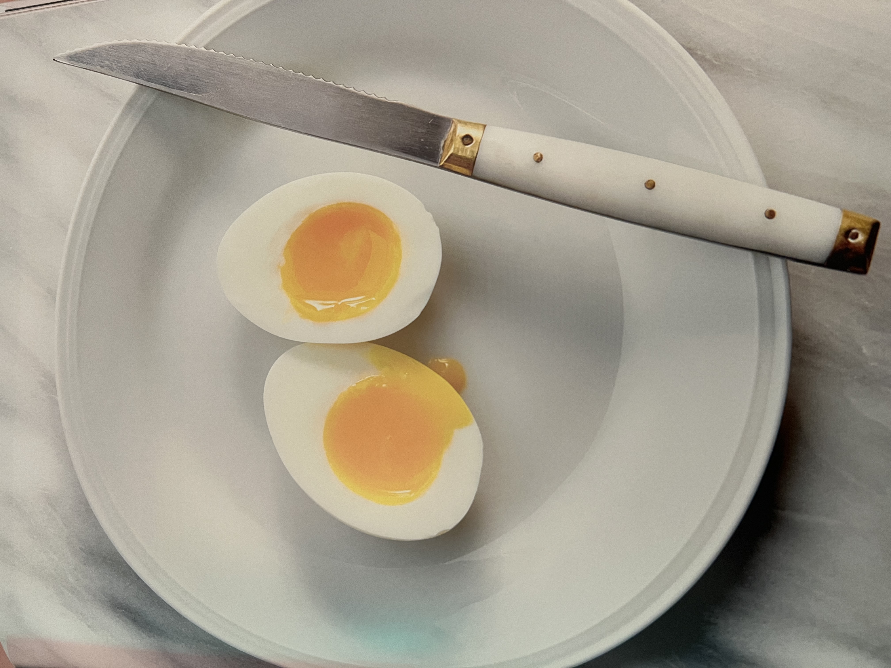

Jammy Eggs
______________________________________________

______________________________________________
Description
There was a point during the infancy of social media when people were putting a sunny-side up fried egg on literally everything. It's delicious, but the idea of it has unfortunately been ruined by the Internet (like many things).
With that said, this is our saving grace. The humble soft-boiled egg.
It is great on its own, on top of some avocado toast, or floating in a bowl of ramen.
_____________
Ingredients
_____________
Steps
- Fill a medium saucepan with enough water to fully submerge the eggs. Bring to a boil over medium-high heat. (Do not add the eggs yet). Once boiling, slightly lower the temperature so the boil is more gentle but not a simmer
- Using a slotted spoon, carefully lower the eggs into the gently boiling water. Cook, uncovered, for exactly 7 minutes.
- While the eggs are boiling, prepare an ice water bath, filling a medium bowl with equal parts ice and water.
- As soon as the timer goes off, immediately remove the eggs from the hot water and submerge them in the ice water bath. Let them cool just until room temperature. Peel and enjoy immediately, or refrigerate in the shells for up to 3 days.